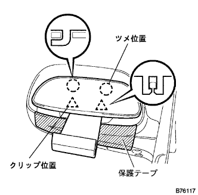
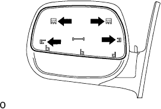
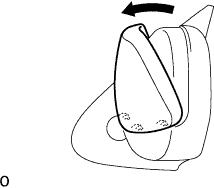

Otari Vie Miller ASSY LH degradation |
| 1. Outer Ryabi Umiller LH removed |
|  |
Put a protective tape on the lower part of the mirror Bodly.
Press the upper side of the mirror and tilt the mirror.
Insert the roof molding Remover into two clips in the figure, and remove the clip at the lower mirror.
Pull out the Otari View Mirror LH and remove it.
| 2. Outmiller Cover LH is removed |
|  |
Remove the claws in the figure in the figure from the inside of the mirror Bodly.
|  |
As shown in the figure, the upper part of the mirror covers is tapped forward, the lower claw is removed, and the outer mirror cover LH is removed.